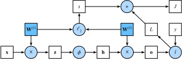

Forward Propagation, Backward Propagation, and Computational Graphs
:label:sec_backprop
So far, we have trained our models with minibatch stochastic gradient descent. However, when we implemented the algorithm, we only worried about the calculations involved in forward propagation through the model. When it came time to calculate the gradients, we just invoked the backpropagation function provided by the deep learning framework.
The automatic calculation of gradients profoundly simplifies the implementation of deep learning algorithms. Before automatic differentiation, even small changes to complicated models required recalculating complicated derivatives by hand. Surprisingly often, academic papers had to allocate numerous pages to deriving update rules. While we must continue to rely on automatic differentiation so we can focus on the interesting parts, you ought to know how these gradients are calculated under the hood if you want to go beyond a shallow understanding of deep learning.
In this section, we take a deep dive into the details of backward propagation (more commonly called backpropagation). To convey some insight for both the techniques and their implementations, we rely on some basic mathematics and computational graphs. To start, we focus our exposition on a one-hidden-layer MLP with weight decay ($\ell_2$ regularization, to be described in subsequent chapters).
Forward Propagation
Forward propagation (or forward pass) refers to the calculation and storage of intermediate variables (including outputs) for a neural network in order from the input layer to the output layer. We now work step-by-step through the mechanics of a neural network with one hidden layer. This may seem tedious but in the eternal words of funk virtuoso James Brown, you must "pay the cost to be the boss".
For the sake of simplicity, let's assume that the input example is $\mathbf{x}\in \mathbb{R}^d$ and that our hidden layer does not include a bias term. Here the intermediate variable is:
\[\mathbf{z}= \mathbf{W}^{(1)} \mathbf{x},\]
where $\mathbf{W}^{(1)} \in \mathbb{R}^{h \times d}$ is the weight parameter of the hidden layer. After running the intermediate variable $\mathbf{z}\in \mathbb{R}^h$ through the activation function $\phi$ we obtain our hidden activation vector of length $h$:
\[\mathbf{h}= \phi (\mathbf{z}).\]
The hidden layer output $\mathbf{h}$ is also an intermediate variable. Assuming that the parameters of the output layer possess only a weight of $\mathbf{W}^{(2)} \in \mathbb{R}^{q \times h}$, we can obtain an output layer variable with a vector of length $q$:
\[\mathbf{o}= \mathbf{W}^{(2)} \mathbf{h}.\]
Assuming that the loss function is $l$ and the example label is $y$, we can then calculate the loss term for a single data example,
\[L = l(\mathbf{o}, y).\]
As we will see the definition of $\ell_2$ regularization to be introduced later, given the hyperparameter $\lambda$, the regularization term is
\[s = \frac{\lambda}{2} \left(\|\mathbf{W}^{(1)}\|_\textrm{F}^2 + \|\mathbf{W}^{(2)}\|_\textrm{F}^2\right),\]
:eqlabel:eq_forward-s
where the Frobenius norm of the matrix is simply the $\ell_2$ norm applied after flattening the matrix into a vector. Finally, the model's regularized loss on a given data example is:
\[J = L + s.\]
We refer to $J$ as the objective function in the following discussion.
Computational Graph of Forward Propagation
Plotting computational graphs helps us visualize the dependencies of operators and variables within the calculation. :numref:fig_forward contains the graph associated with the simple network described above, where squares denote variables and circles denote operators. The lower-left corner signifies the input and the upper-right corner is the output. Notice that the directions of the arrows (which illustrate data flow) are primarily rightward and upward.
 :label:fig_forward
Backpropagation
Backpropagation refers to the method of calculating the gradient of neural network parameters. In short, the method traverses the network in reverse order, from the output to the input layer, according to the chain rule from calculus. The algorithm stores any intermediate variables (partial derivatives) required while calculating the gradient with respect to some parameters. Assume that we have functions $\mathsf{Y}=f(\mathsf{X})$ and $\mathsf{Z}=g(\mathsf{Y})$, in which the input and the output $\mathsf{X}, \mathsf{Y}, \mathsf{Z}$ are tensors of arbitrary shapes. By using the chain rule, we can compute the derivative of $\mathsf{Z}$ with respect to $\mathsf{X}$ via
\[\frac{\partial \mathsf{Z}}{\partial \mathsf{X}} = \textrm{prod}\left(\frac{\partial \mathsf{Z}}{\partial \mathsf{Y}}, \frac{\partial \mathsf{Y}}{\partial \mathsf{X}}\right).\]
Here we use the $\textrm{prod}$ operator to multiply its arguments after the necessary operations, such as transposition and swapping input positions, have been carried out. For vectors, this is straightforward: it is simply matrix–matrix multiplication. For higher dimensional tensors, we use the appropriate counterpart. The operator $\textrm{prod}$ hides all the notational overhead.
Recall that the parameters of the simple network with one hidden layer, whose computational graph is in :numref:fig_forward, are $\mathbf{W}^{(1)}$ and $\mathbf{W}^{(2)}$. The objective of backpropagation is to calculate the gradients $\partial J/\partial \mathbf{W}^{(1)}$ and $\partial J/\partial \mathbf{W}^{(2)}$. To accomplish this, we apply the chain rule and calculate, in turn, the gradient of each intermediate variable and parameter. The order of calculations are reversed relative to those performed in forward propagation, since we need to start with the outcome of the computational graph and work our way towards the parameters. The first step is to calculate the gradients of the objective function $J=L+s$ with respect to the loss term $L$ and the regularization term $s$:
\[\frac{\partial J}{\partial L} = 1 \; \textrm{and} \; \frac{\partial J}{\partial s} = 1.\]
Next, we compute the gradient of the objective function with respect to variable of the output layer $\mathbf{o}$ according to the chain rule:
\[ \frac{\partial J}{\partial \mathbf{o}} = \textrm{prod}\left(\frac{\partial J}{\partial L}, \frac{\partial L}{\partial \mathbf{o}}\right) = \frac{\partial L}{\partial \mathbf{o}} \in \mathbb{R}^q. $$ Next, we calculate the gradients of the regularization term with respect to both parameters: $$\frac{\partial s}{\partial \mathbf{W}^{(1)}} = \lambda \mathbf{W}^{(1)} \; \textrm{and} \; \frac{\partial s}{\partial \mathbf{W}^{(2)}} = \lambda \mathbf{W}^{(2)}.\]
Now we are able to calculate the gradient $\partial J/\partial \mathbf{W}^{(2)} \in \mathbb{R}^{q \times h}$ of the model parameters closest to the output layer. Using the chain rule yields:
\[\frac{\partial J}{\partial \mathbf{W}^{(2)}}= \textrm{prod}\left(\frac{\partial J}{\partial \mathbf{o}}, \frac{\partial \mathbf{o}}{\partial \mathbf{W}^{(2)}}\right) + \textrm{prod}\left(\frac{\partial J}{\partial s}, \frac{\partial s}{\partial \mathbf{W}^{(2)}}\right)= \frac{\partial J}{\partial \mathbf{o}} \mathbf{h}^\top + \lambda \mathbf{W}^{(2)}.\]
:eqlabel:eq_backprop-J-h
To obtain the gradient with respect to $\mathbf{W}^{(1)}$ we need to continue backpropagation along the output layer to the hidden layer. The gradient with respect to the hidden layer output $\partial J/\partial \mathbf{h} \in \mathbb{R}^h$ is given by
$
\frac{\partial J}{\partial \mathbf{h}} = \textrm{prod}\left(\frac{\partial J}{\partial \mathbf{o}}, \frac{\partial \mathbf{o}}{\partial \mathbf{h}}\right) = {\mathbf{W}^{(2)}}^\top \frac{\partial J}{\partial \mathbf{o}}. $
Since the activation function $\phi$ applies elementwise, calculating the gradient $\partial J/\partial \mathbf{z} \in \mathbb{R}^h$ of the intermediate variable $\mathbf{z}$ requires that we use the elementwise multiplication operator, which we denote by $\odot$:
$
\frac{\partial J}{\partial \mathbf{z}} = \textrm{prod}\left(\frac{\partial J}{\partial \mathbf{h}}, \frac{\partial \mathbf{h}}{\partial \mathbf{z}}\right) = \frac{\partial J}{\partial \mathbf{h}} \odot \phi'\left(\mathbf{z}\right). $
Finally, we can obtain the gradient $\partial J/\partial \mathbf{W}^{(1)} \in \mathbb{R}^{h \times d}$ of the model parameters closest to the input layer. According to the chain rule, we get
$
\frac{\partial J}{\partial \mathbf{W}^{(1)}} = \textrm{prod}\left(\frac{\partial J}{\partial \mathbf{z}}, \frac{\partial \mathbf{z}}{\partial \mathbf{W}^{(1)}}\right) + \textrm{prod}\left(\frac{\partial J}{\partial s}, \frac{\partial s}{\partial \mathbf{W}^{(1)}}\right) = \frac{\partial J}{\partial \mathbf{z}} \mathbf{x}^\top + \lambda \mathbf{W}^{(1)}. $
Training Neural Networks
When training neural networks, forward and backward propagation depend on each other. In particular, for forward propagation, we traverse the computational graph in the direction of dependencies and compute all the variables on its path. These are then used for backpropagation where the compute order on the graph is reversed.
Take the aforementioned simple network as an illustrative example. On the one hand, computing the regularization term :eqref:eq_forward-s during forward propagation depends on the current values of model parameters $\mathbf{W}^{(1)}$ and $\mathbf{W}^{(2)}$. They are given by the optimization algorithm according to backpropagation in the most recent iteration. On the other hand, the gradient calculation for the parameter :eqref:eq_backprop-J-h during backpropagation depends on the current value of the hidden layer output $\mathbf{h}$, which is given by forward propagation.
Therefore when training neural networks, once model parameters are initialized, we alternate forward propagation with backpropagation, updating model parameters using gradients given by backpropagation. Note that backpropagation reuses the stored intermediate values from forward propagation to avoid duplicate calculations. One of the consequences is that we need to retain the intermediate values until backpropagation is complete. This is also one of the reasons why training requires significantly more memory than plain prediction. Besides, the size of such intermediate values is roughly proportional to the number of network layers and the batch size. Thus, training deeper networks using larger batch sizes more easily leads to out-of-memory errors.
Summary
Forward propagation sequentially calculates and stores intermediate variables within the computational graph defined by the neural network. It proceeds from the input to the output layer. Backpropagation sequentially calculates and stores the gradients of intermediate variables and parameters within the neural network in the reversed order. When training deep learning models, forward propagation and backpropagation are interdependent, and training requires significantly more memory than prediction.
Exercises
- Assume that the inputs $\mathbf{X}$ to some scalar function $f$ are $n \times m$ matrices. What is the dimensionality of the gradient of $f$ with respect to $\mathbf{X}$?
- Add a bias to the hidden layer of the model described in this section (you do not need to include bias in the regularization term).
- Draw the corresponding computational graph.
- Derive the forward and backward propagation equations.
- Compute the memory footprint for training and prediction in the model described in this section.
- Assume that you want to compute second derivatives. What happens to the computational graph? How long do you expect the calculation to take?
- Assume that the computational graph is too large for your GPU.
- Can you partition it over more than one GPU?
- What are the advantages and disadvantages over training on a smaller minibatch?